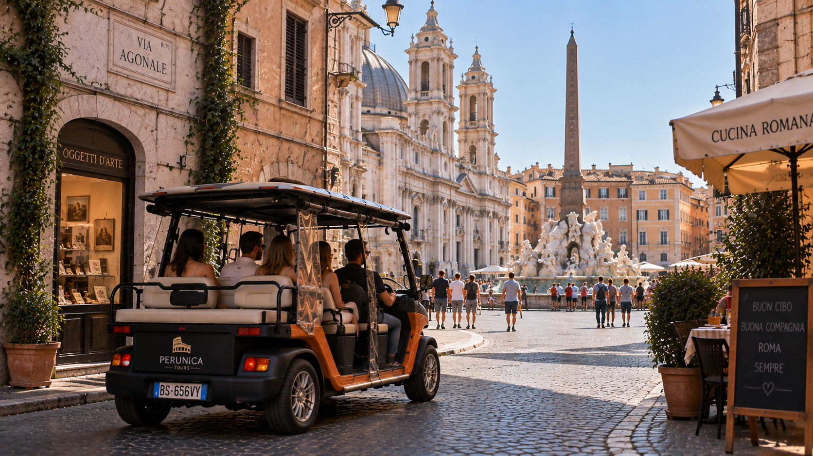
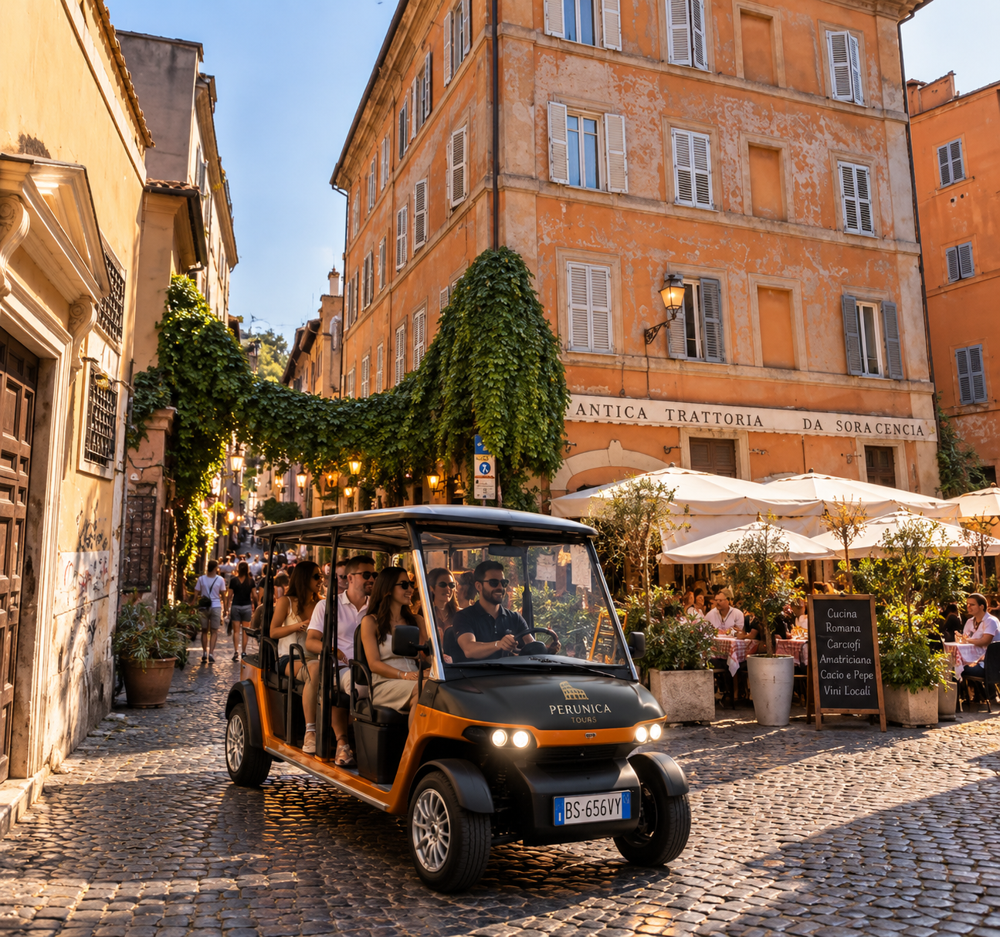
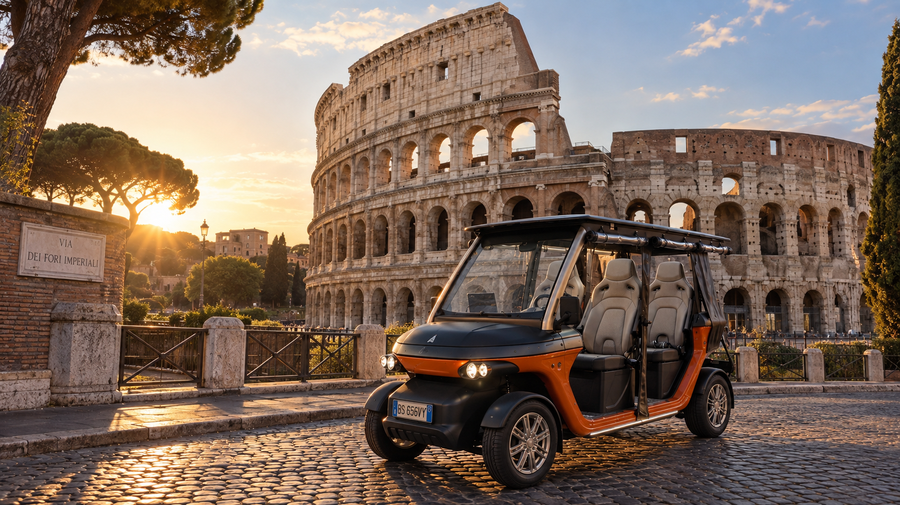
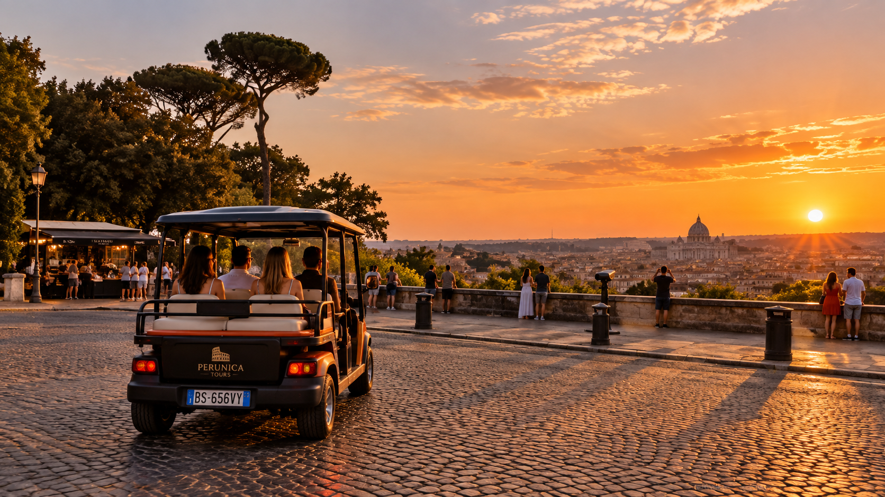
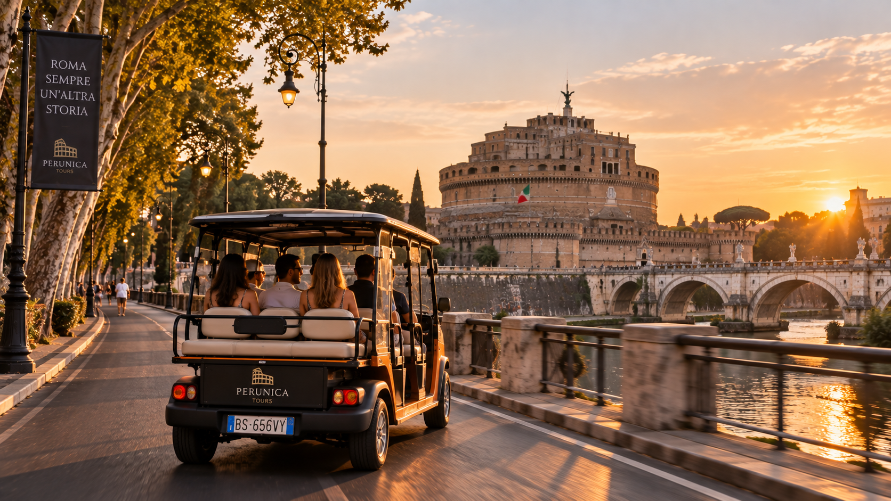
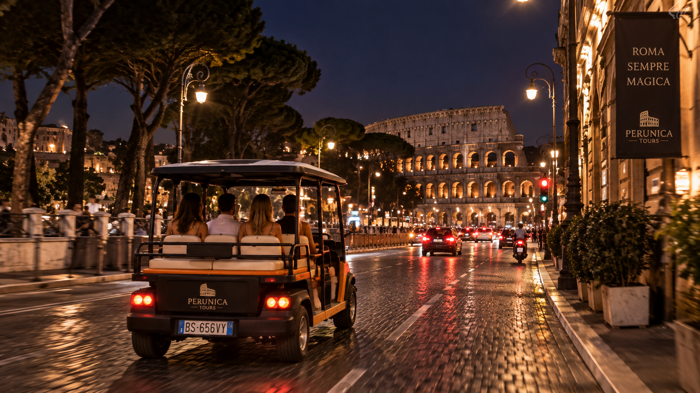
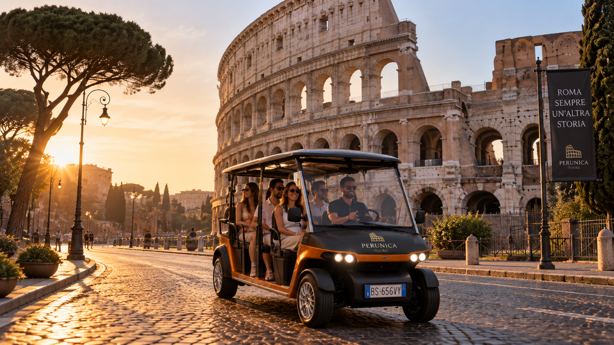

Small by design.
Intimate electric-cart experiences instead of a crowd following a flag.
See the Rome everyone comes for.
Discover the Rome most people miss.
It is streets, voices, unexpected corners, stories and the freedom to stop when something catches your eye.
Perunica keeps the experience small, personal and close to the city.

Colosseum · Historic centre · Hidden Rome

Trastevere · Streets · Stories

More than transport. Your front-row seat to Rome. Open views, small groups and the freedom to experience the city without rushing through it.
Ancient stone. Golden light. Quiet viewpoints. Streets that make you forget where you were going.



A small selection of apartments managed directly in Rome.
No hotel catalogue. No endless search. Just Perunica's own selected stays.
Explore all stays ↗Intimate electric-cart experiences instead of a crowd following a flag.
Local knowledge, conversation and room for the unexpected.
Stop for a photo, ask another question or simply stay a little longer.
Less walking and adaptable experiences make the city easier to enjoy.

The electric cart can make Rome more comfortable for travellers who prefer to reduce long walking distances while still experiencing the city up close.
Accessibility ↗
Choose your experience.
We'll take care of the rest.